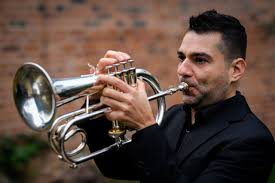
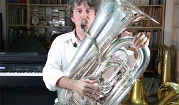

VIENTO METAL
¿Qué caracteriza los instrumentos de Viento Metal?
Los instrumentos de viento metal son instrumentos musicales de viento compuestos por un tubo de metal (generalmente latón), que puede estar doblado o recto, una boquilla y una campana en el extremo opuesto a la boquilla. Aunque estos instrumentos están fabricados en metal, la mayoría de ellos tienen antecesores tomados de la naturaleza, como las caracolas, ramas huecas o cuernos y partes de algunos animales. A continuacuón, os mostramos algunos de ellos:
Fliscorno
El fliscorno o fiscorno (del alemán Flügelhorn, “corno alado") es un instrumento de viento, perteneciente a la familia de los instrumentos de viento metal o metales dentro del tipo de los bugles, también llamado bugelhorn, flügelhorn o saxhorno, fabricado en aleación de metal. Guarda gran similitud con la trompeta. El fliscorno se inventó en el siglo XIX, añadiendo pistones al clarín (bugle). El sonido se produce gracias a la vibración de los labios del intérprete en la parte denominada boquilla a partir de la columna del aire (flujo del aire) . El fliscorno comúnmente está afinado en Si♭ (bemol), es decir, un tono por debajo de la afinación escrita en el pentagrama.
Sousafón
El sousafón se desarrolló durante la década de 1890 por parte de J.W. Pepper a petición de Sousa, quien no estaba satisfecho con las tubas utilizadas por aquella época en la banda de los Marines estadounidenses. Durante aquel período, utilizaba helicones, que recuerdan algo a los sousafones actuales, pero que tienen una campana dirigida hacia arriba y adelante. Los primeros sousáfonos tenían campanas verticales y hoy se los conoce como "recogedores de lluvia". Sousa quería una tuba que dirigiese el sonido hacia arriba y por encima de la banda y que tuviese un sonido cálido y lleno, al contrario de los helicones, que eran direccionales. Contrariamente a la creencia popular , no se desarrolló inicialmente como un instrumento para marchar; la versión con el pabellón hacia delante no se estrenó hasta mediados de los años 20.
Trombón
Las diferentes notas se obtienen por el movimiento de un tubo móvil, denominado vara, alargando la distancia que el aire en vibración debe recorrer, produciendo de este modo sonidos que también se pueden controlar con la presión del aire soplado por el intérprete en la vara. Se diferencian siete posiciones distintas a lo largo de la vara. Cuanto más se alarga la columna de aire con cada posición, el sonido producido es más grave que en la anterior. Sin embargo, también existen trombones con válvulas. Al igual que casi todos los instrumentos de esta familia de viento-metal, el trombón de varas es de latón (aunque actualmente muchas fábricas optan también por el cobre y los baños de plata), y consiste en un tubo cilíndrico y abierto enrollado sobre sí mismo.

Trompa
La trompa, o corno francés, es un instrumento de viento-metal que tiene un carácter muy versátil y abarca una tesitura muy amplia con pocos cilindros. Además este instrumento puede emitir tanto sonidos suaves y dulces como ásperos y duros. Existen ciertos recursos técnicos que permiten a la trompa conseguir efectos tímbricos especiales: sordina, bouché, apagador y cuivré. Su antepasado es el cuerno de caza.
Trompeta
La trompeta es un instrumento musical de viento, que pertenece a la familia de los instrumentos de viento metal o metales, fabricado en aleación de metal . El sonido se produce gracias a la vibración de los labios del intérprete en la parte denominada boquilla a partir de la columna del aire (flujo del aire). Comúnmente, suele estar afinada en si ♭ (bemol), es decir, un tono por debajo de la afinación escrita en el pentagrama, aunque también hay trompetas afinadas en fa, en do, en la y en mi, - bemol. Al músico que toca la trompeta se le conoce como trompetista o trompeta.

Tuba
La tuba o bajo es el mayor de los instrumentos de viento-metal y sus antecesores son el serpentón y el oficleido. Es uno de los instrumentos más recientemente añadidos a la orquesta sinfónica moderna, aparecido en 1835 con Wilhelm Friedrich Wieprecht y Johann Gottfried Moritz, sustituyendo al oficleido del siglo XVIII. El sonido se produce gracias a la vibración de los labios del intérprete en la parte denominada boquilla a partir de la columna del aire (flujo del aire). La primera vez que se utilizó la tuba moderna en una orquesta sinfónica fue en El anillo del nibelungo de Richard Wagner. Gracias a su versatilidad permite utilizarla para reforzar cuerdas y vientos de madera o, cada vez más, como instrumento para solos.
